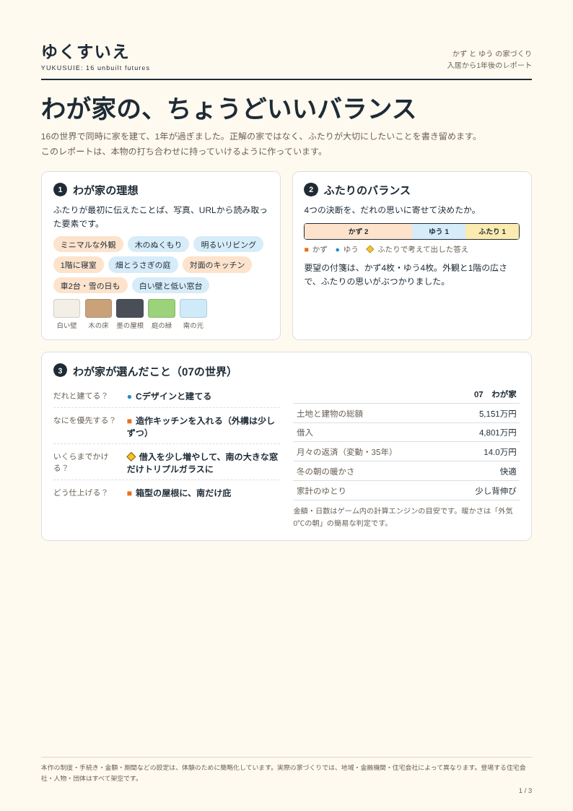
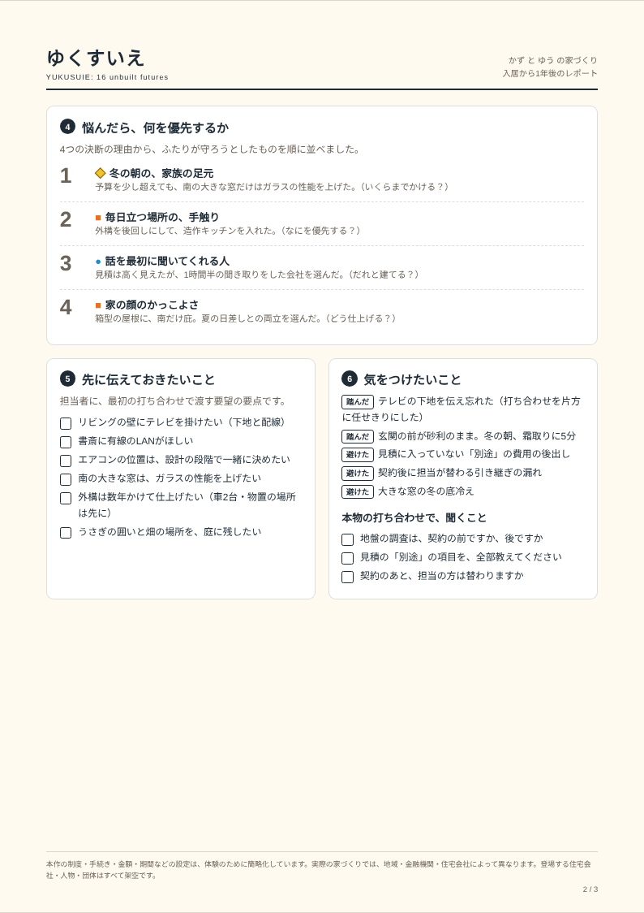
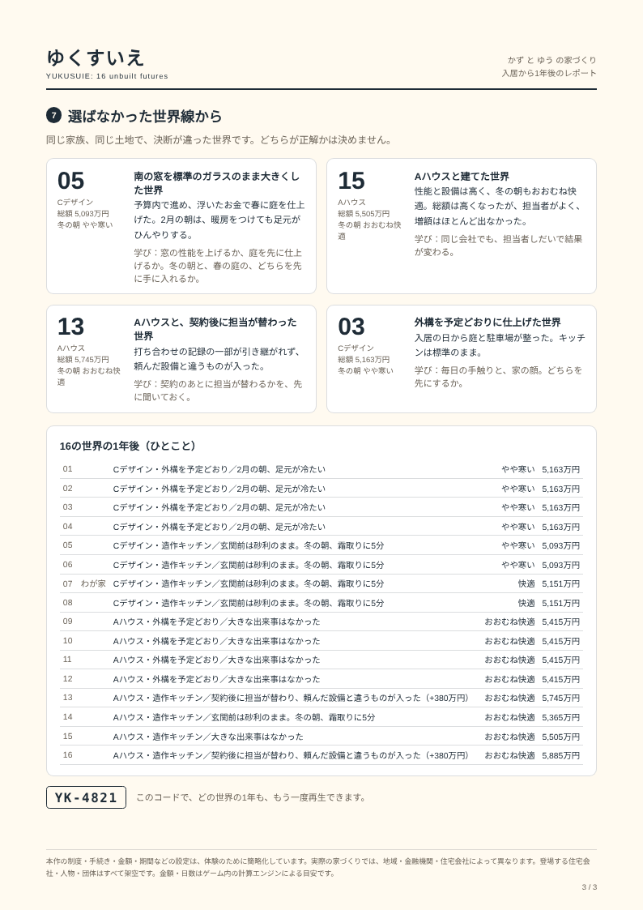

<!doctype html>
<html lang="ja"><head><meta charset="utf-8"><title>S10 レポートへの入口</title>
<meta name="viewport" content="width=device-width,initial-scale=1">
<script src="../../../../app/engine.js"></script><script src="../../../../app/iso.js"></script><script src="../../play/common.js"></script><script src="../screens.js"></script>
<link rel="stylesheet" href="../screens.css">
<style id="css"></style>
<style>
/* レポートへの入口：左＝できあがった07の家と、ふたりのひとこと／右＝レポートの3ページの表紙と、受け取る・印刷する・再生する */
.hero{height:930px}
.hero svg{top:110px;width:860px;height:620px;left:130px}
.say{position:absolute;left:28px;right:28px;bottom:24px;display:grid;grid-template-columns:1fr 1fr;gap:12px}
.say div{background:rgba(255,250,240,.94);border:1.5px solid rgba(30,43,54,.2);border-radius:14px;padding:12px 16px;font-size:19px;line-height:1.55}
.say b{display:flex;align-items:center;font-size:14px;color:var(--ink2);font-weight:400;margin-bottom:2px}
.rp{position:absolute;left:1180px;top:124px;width:710px;height:930px;background:#fff;border:1.5px solid rgba(30,43,54,.2);border-radius:20px;box-shadow:0 10px 30px rgba(30,43,54,.10);padding:26px 30px;display:flex;flex-direction:column;gap:16px}
.rp .eyebrow{font-size:16px;color:var(--ink2)}
.rp h2{font-family:var(--fr);font-weight:900;font-size:40px;line-height:1.3}
.pages{display:grid;grid-template-columns:repeat(3,1fr);gap:14px}
.pages figure{background:var(--paper);border:1px solid rgba(30,43,54,.15);border-radius:8px;padding:8px;box-shadow:0 4px 0 rgba(30,43,54,.06)}
.pages img{width:100%;aspect-ratio:210/297;object-fit:cover;object-position:top;display:block;border-radius:3px;background:#fff}
.pages figcaption{font-size:14px;color:var(--ink2);text-align:center;margin-top:6px}
.keys{list-style:none;display:flex;flex-direction:column;gap:8px}
.keys li{display:grid;grid-template-columns:200px 1fr;gap:12px;font-size:18px;line-height:1.5;padding:8px 12px;border-radius:10px;background:#F7F4EE}
.keys li span:first-child{color:var(--ink2);font-size:16px}
.act{margin-top:auto;display:flex;flex-direction:column;gap:10px}
.act .row2{display:grid;grid-template-columns:1fr 1fr;gap:10px}
.act .btn{width:100%;font-size:22px;padding:16px}
.code{font-size:15px;color:var(--ink2);text-align:center}
.code b{font-family:"SFMono-Regular",Menlo,monospace;color:var(--ink);letter-spacing:.08em}
</style></head>
<body><div id="stage"><div id="view"></div></div>
<script>
document.getElementById('css').textContent = S.L.CSS;
const { L, Y, W, man } = S;
const me = W(L.YOU);
function draw() {
  const list = L.worldsAt(11), mine = list[L.YOU - 1];
  document.getElementById('view').innerHTML = `
  ${S.top(11)}${S.money('final')}
  <div class="clks"><span class="clk"><b>1年後</b></span><span class="clk soft">16の世界を見終えました</span></div>
  <div class="hero">
    <div class="lab"><span class="no">07</span>あなたの家　${L.coTag('C', 28)}Cデザイン</div>
    <div class="ph">入居から1年<br><span style="font-size:15px">冬の朝 ${me.warmth.label}・家計のゆとり ${me.slack.label}</span></div>
    ${L.bigHouse(mine.w, 4)}
    <div class="say">
      <div><b><i class="sq"></i>かず</b>家の顔はまだ途中。でも、冬の朝はずっと暖かかった。</div>
      <div><b><i class="ci"></i>ゆう</b>次に打ち合わせをするなら、最初に何を伝えるか、もう決まってる。</div>
    </div>
  </div>
  <div class="rp">
    <div class="eyebrow">かず と ゆう の家づくり・1年後のレポート</div>
    <h2>わが家の、ちょうどいいバランス</h2>
    <div class="pages">
      <figure><figcaption>理想とバランス</figcaption></figure>
      <figure><figcaption>優先と、伝えること</figcaption></figure>
      <figure><figcaption>選ばなかった世界線</figcaption></figure>
    </div>
    <ul class="keys">
      <li><span>悩んだら優先すること</span><span>冬の朝の、家族の足元</span></li>
      <li><span>先に伝えておくこと</span><span>テレビは壁掛け（下地の位置まで）</span></li>
      <li><span>土地と建物の総額</span><span>${man(me.total)}万円（月々 約${Y.payment(me.principal, Y.RATE.variable).toFixed(1)}万円）</span></li>
    </ul>
    <div class="act">
      <button class="btn">レポートを受け取る</button>
      <div class="row2"><button class="btn ghost" style="font-size:19px">印刷用（A4・3ページ）</button><button class="btn ghost" style="font-size:19px">選ばれなかった世界線を見る</button></div>
      <div class="code">再生用のコード <b>YK-4821</b></div>
    </div>
  </div>`;
}
S.fit(); draw(); window.render = draw; window.DUR = 1; window.READY = true;
</script></body></html>
